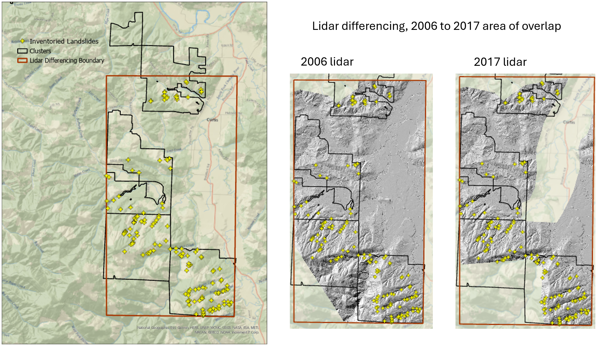
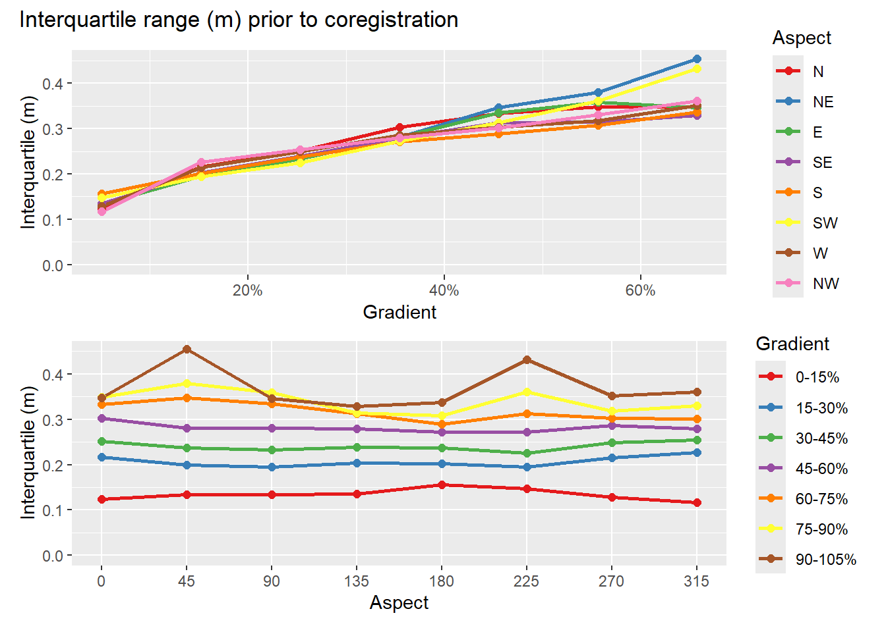
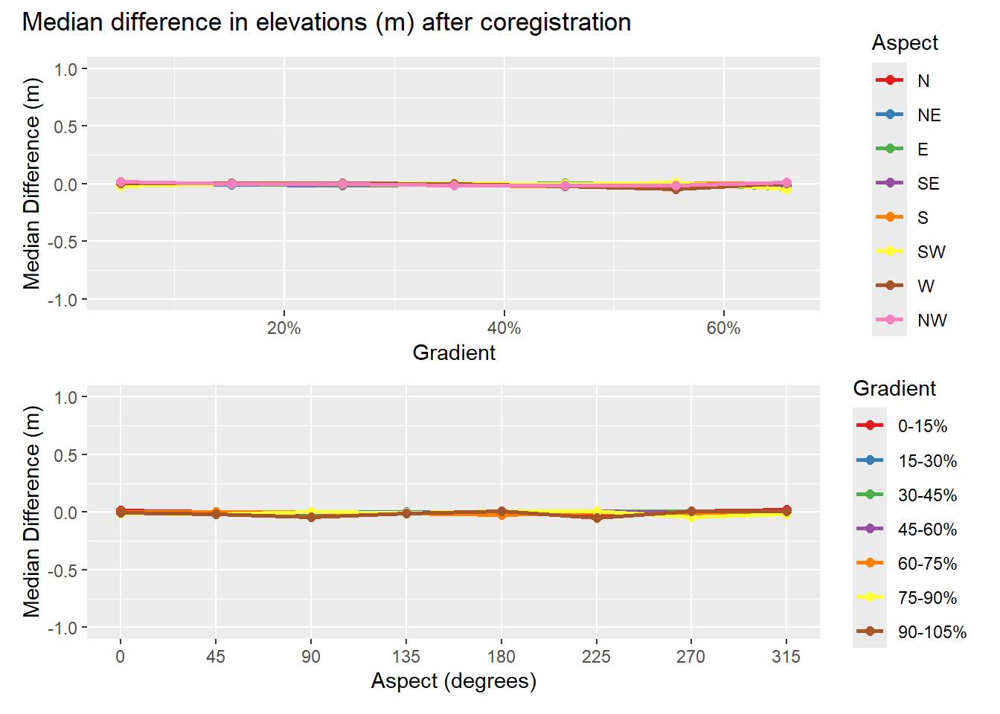
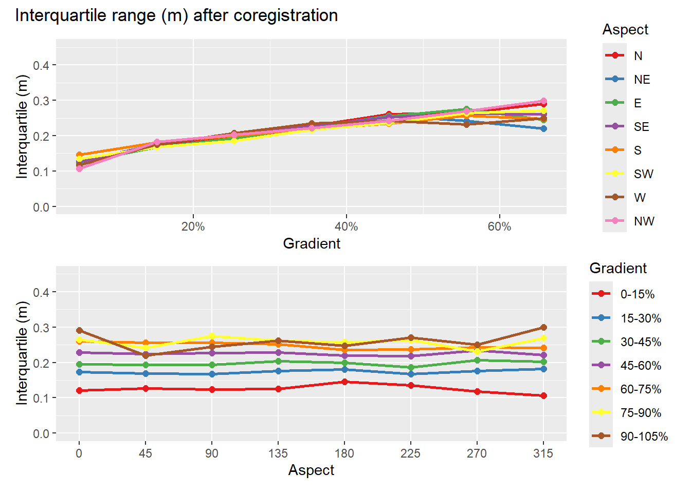
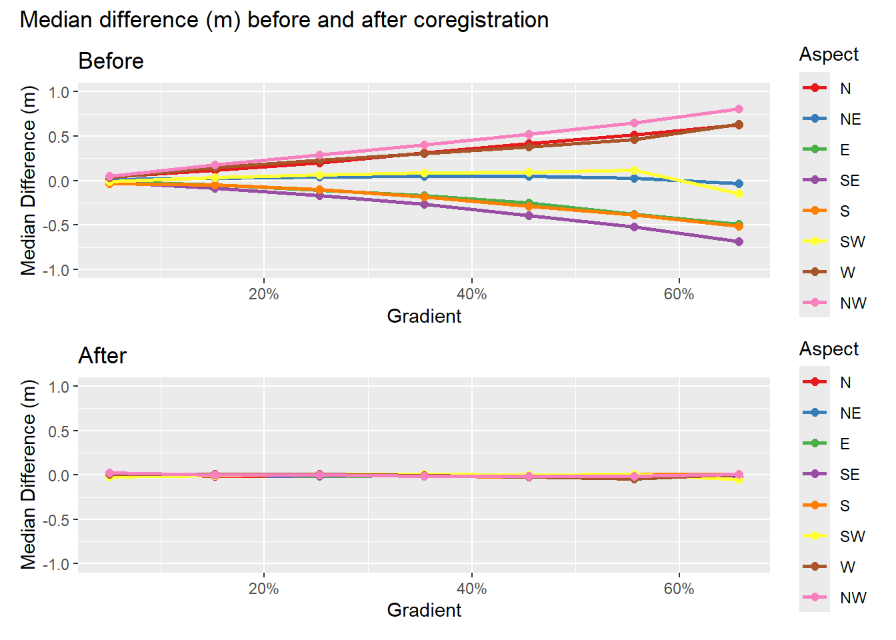
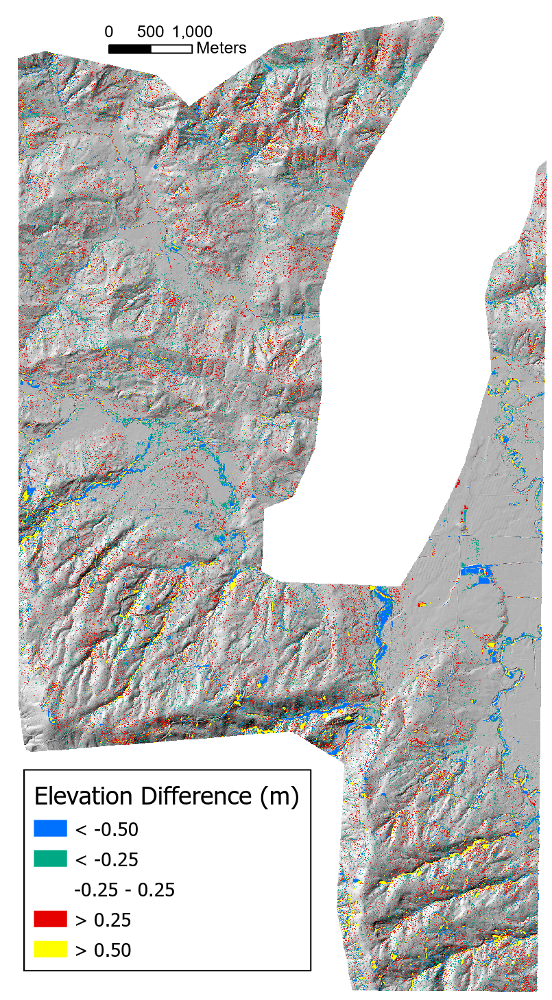

Coregistration
We want to identify landslide sites using changes in ground-surface elevation resolved between sequential lidar acquisitions. We want to take advantage of raster-processing algorithms for image segmentation and topographic analyses, so we would like to work with elevation-difference rasters. In using lidar to detect elevation change, it is necessary to ensure that the two data sets are aligned spatially. Differences in spatial registration between the two data sets will produce systematic errors in measured elevation differences. In the study design, we described approaches that have been used for co-registration of lidar datasets. These involve two strategies:
Co-register the ground returns, then build DTMs.
Co-register existing DTMs.
The first approach seems likely to be the more consistent of the two, because consistent methods can be used for filtering ground returns from the point clouds and for interpolation of the DTMs from the ground returns. When using existing DTMs, e.g., those downloaded from the Lidar Portal, they may have been generated with different point-filtering algorithms and interpolation schemes. However, working with point clouds directly is computationally intensive and time consuming. If we can obtain good results with the existing DTMs, that will reduce time and computer requirements dramatically.
Consider two DTMs for the same site, one slightly offset from the other by an amount \(\Delta x, \Delta y, \Delta z\). The elevation difference between the two DTMs at a grid-point \(i\) is \(\Delta e_i\). We can write the elevation difference as
\[ \Delta e_i = \frac{\partial{\Delta e_i}}{\partial{x_i}}\Delta x + \frac{\partial{\Delta e_i}}{\partial{y_i}}\Delta y + \frac{\partial{\Delta e_i}}{\partial{z_i}}\Delta z \tag{1}\]
where \(\frac{\partial{\Delta e_i}}{\partial{x_i}}\) is the partial derivative of the elevation difference with respect to \(x_i\), and similarly for \(y_i\) and \(z_i\). For \(n\) DTM grid points, we then have \(n\) equations, each with a unique \(\Delta e_i, \frac{\partial{\Delta e_i}}{\partial{x_i}}\), and \(\frac{\partial{\Delta e_i}}{\partial{y_i}}\) (\(\frac{\partial{\Delta e_i}}{\partial{z_i}}\) is simply one) and with single values for each of \(\Delta x, \Delta y\), and \(\Delta z\). We seek the \(\Delta x, \Delta y\), and \(\Delta z\) that provide the best estimates of all the \(\Delta e_i\)s. We can treat this as a linear least-squares problem. In matrix notation, we seek to minimize \(||\boldsymbol{A}\boldsymbol{x} - \boldsymbol{b}||^2\) where \(\boldsymbol{A}\) is a 3 by \(n\) matrix containing the partial derivatives, \(\boldsymbol{x}\) is a 3-element vector containing the the \(\Delta x, \Delta y\), and \(\Delta z\) values, and \(\boldsymbol{b}\) is an \(n\)-element array containing the \(\Delta e_i\)s.
Imagine, on an 80% slope, an offset of 0.5 meters between the two DTMs would result in a \(\Delta e\) of 0.4 meters. The partial derivatives \(\frac{\partial{\Delta e_i}}{\partial{x_i}}\) and \(\frac{\partial{\Delta e_i}}{\partial{y_i}}\) reflect the ground-surface slope at point \(i\) as resolved by the DTM. Each point lies at the corner of four DTM cells, each cell is defined by four points. For any DTM point, we can look at the elevations of the adjacent 8 points to determine into which of the four adjacent cell we need to shift the point to solve for \(\Delta e\). We can estimate the elevation change with a change in x or y within that cell using bilinear interpolation. That gives a value for \(\frac{\partial{\Delta e_i}}{\partial{x_i}}\) and \(\frac{\partial{\Delta e_i}}{\partial{y_i}}\). The value of \(\frac{\partial{\Delta e_i}}{\partial{z_i}}\) is simply 1.1
For any overlapping portion of two DTMs, we can find an optimal set \(\Delta x, \Delta y\), and \(\Delta z\). Because the degree of misalignment between the DTMs may vary spatially, we can seek optimal solutions over a moving window or for overlapping tiles, although the window or tiles must be sufficiently large to encompass the full range of slope aspects.
In doing this, we want to exclude portions of the DTMs where elevation changes did occur. The \(\Delta e\)s for those sites would not be a consequence of a shift in the registration between the DTMs and including those in our set of equations would bias the resulting estimates for \(\Delta x, \Delta y\), and \(\Delta z\). Below I describe a method for differentiating systematic errors and noise from the elevation changes we want to resolve.
We’ll use a portion of the Post-Mortem study area with overlap of the 2006 and 2007 lidar DTMs that contains several of the study blocks. The study blocks are shown by the black polygons in the image below. The red box outlines the analysis area.


Overlap of the two DTMs is shown below with the elevation difference, in quarter-meter increments, indicated by the colors.

The elevation differences are spatially variable with systematic biases aligned with hillslope aspect. We can see this by binning the elevation differences for each DTM grid point by increments in slope and aspect and plotting quartiles. To make the following plots, I first determined the quartiles for the full range of elevation-difference values in each bin. I want to focus on systematic errors and noise in the DTMs and exclude sites where elevations did change, e.g., at landslide sites. To differentiate between signal (actual elevation changes) and noise, I calculated the interquartile range for all values, then used a Tukey fence with \(k\) = 1.5. Values less that \(q1 - 1.5*(q3-q1)\) or greater than \(q3 + 1.5*(q3-q1)\) are considered likely outliers. These potentially indicate sites where elevations have changed between lidar acquisitions. For each bin, I removed these potential outliers and recalculated the quartiles to provide an estimate of the systematic bias and random error in the elevation-difference values.
The calculations are performed by program align.
Start with systematic errors as indicated by the median value for each slope and aspect bin.
The median represents the systematic error. It is small for low-gradient terrain and increases with slope steepness. For south-easterly aspects, the median error is negative; for north-westerly aspects, the median error is positive, and for south-west and north-east facing slopes, the median error remains small. This indicates that the DTMs are shifted in a south-east to north-west direction relative to each other.
We can use the interquartile range as a measure of noise in the difference raster.

The interquartile range is relatively small for low-gradient terrain and increases with slope steepness. This provides a characterization of the noise in the elevation-difference raster obtained by subtracting the 2017 lidar DTM from the 2006 lidar DTM. Can we use these measurements to constrain the elevation-threshold that distinguishes signal from noise? Can we use \(qmin = q1 - 1.5*(q3-q1)\) for the minimum \(q1\) value as a function of aspect and slope as a threshold for identifying sites where elevations decreased between 2006 and 2017? Likewise, can we use \(qmax = q3 + 1.5*(q3-q1)\) for the maximum \(q3\) value as a function of aspect and slope as a threshold for identifying sites where elevations increased between 2006 and 2017? These values provide slope-dependent threshold within which we can identify sites where elevations likely did not change.
Can we define a function of slope and aspect that reflects the behavior observed in the graphs above? For a single aspect, we see that the median error exhibits a roughly linear dependence with gradient. The slope of that linear dependence varies with the sine of the aspect. This agrees with what we expect if the two DTMs are offset horizontally. Along the fall line, differences in elevation will be maximum; along a contour, differences will be minimum. So define \[\mu = \sin(A+\alpha)\]
where \(A\) is the azimuth measured from north and \(\alpha\) is the angular shift so variation in \(\mu\) aligns with that seen in Figure 1. Then define a linear function of gradient with coefficients that vary with \(\mu\):
\[ qmin = (\beta_0 + \beta_1\mu) + (\beta_2 + \beta_3\mu)*S \]
where \(S\) is slope gradient and the \(\beta\)s are empirical coefficients. This defines an equation with five coefficients, \(\alpha\) and the four \(\beta\)s.
I solve for these coefficients as follows:
- Create a normalized set of curves for the variation of \(q2\) as a function of aspect for each of the slope-gradient increments. The “normalized” curves vary from -1 to +1 over the range of aspects. The normalization is done as follows:
- For each slope increment, find the maximum and minimum values of \(q2\).
- Define \(qshift = -(qmax-qmin)*0.5\)
- Define \(range = (qmax-qmin)*0.5\)
- Define \(normq(abin,sbin) = (q2(abin,sbin) + qshift)/range\)
- Find the value of \(\alpha\) that minimizes the sum of squared residuals, i.e., find the value of \(\alpha\) that minimizes \(\sum_{i=1}^n(\sin(A_i+\alpha)-normq_i)^2\). This is done using Brent’s algorithm (see people.match.sc.edu/Burkardt/f_src/brent/brent.f90).
- Define a set of linear equations
\[qmin_i = \beta min_0 + \beta min_1*mu_i + \beta min_2*S_i + \beta min_3*mu_i*S_i\] \[qmax_i = \beta max_0 + \beta max_1*mu_i + \beta max_2*S_i + \beta max_3*mu_i*S_i\] where \(\mu_i = \sin(A_i+\alpha)\) and \(A_i\) is the slope aspect and \(S_i\) is slope gradient. - Solve for the \(\beta min\)s and \(\beta max\)s. This is done using the LAPACK routine DGELS.
Here are the resulting curves for the eight major slope aspects (N, NE, E, SE, S, SW, W, and NW).
The envelope contained within the \(qmin\) and \(qmax\) threshold curves defines the elevation-difference values falling within the range of gradient- and aspect-dependent systematic errors plus the random errors (noise) present in the difference raster. We can use these thresholds to identify sites where there likely were elevation changes during the time between the lidar acquisitions and exclude these from the set of equations used to estimate the optimal \(\Delta x, \Delta y\), and \(\Delta z\) values. We then use the elevation-difference raster to estimate the optimal \(\Delta x, \Delta y\), and \(\Delta z\) values for each tile or moving window and shift the 2017 DTM to align with the 2006 DTM. Note that these shifts can be spatially variable. We then use the aligned 2017 DTM to estimate the elevation differences between the two DTMs.
Here are results after coregistration.

This procedure has greatly reduced the systematic differences. The slope and aspect dependence are not entirely eliminated - I’ll think some more about how to get that last little bit. Let’s look at the interquartile range, our measure of random error.

Comparing before and after:

The random errors, as indicated by the interquartile range, have been slightly reduced. Not what I was expecting. Here’s another look at the before and after results.
Warning: A numeric `legend.position` argument in `theme()` was deprecated in ggplot2
3.5.0.
ℹ Please use the `legend.position.inside` argument of `theme()` instead.We’ve narrowed the range of median values and shifted the the interquartiles to lower values (but that dual mode in the median is interesting). Here’s the elevation differences after alignment:

We still see random noise, but the systematic errors aligned with slope aspect are gone. Distinct changes are visible along many stream channels.
Next steps:
Map the outlier magnitude using program Quantiles: that is, how many interquartile ranges is a point below qmin or above qmax. This is what we use to identify candidate sites. These are then filtered in program huntLS to flag potential landslide scars.
We can determine the spatial extent of a patch using the local qmin and qmax, but still measure the volume change using the dz values.
Footnotes
I found, however, that the vertical shift, \(\Delta z\), varied nonlinearly with slope gradient. Equation 1 was therefore modified to \(\Delta e_i =\frac{\partial{\Delta e_i}}{\partial{x_i}}\Delta x + \frac{\partial{\Delta e_i}}{\partial{y_i}}\Delta y + \frac{\partial{\Delta e_i}}{\partial{z_i}}\Delta z + \beta_1 S_i + \beta_2 S_i^2\), where \(S_i\) is slope gradient for the \(i^{th}\) point and \(\beta_1\) and \(\beta_2\) are additional empirical coefficients.↩︎